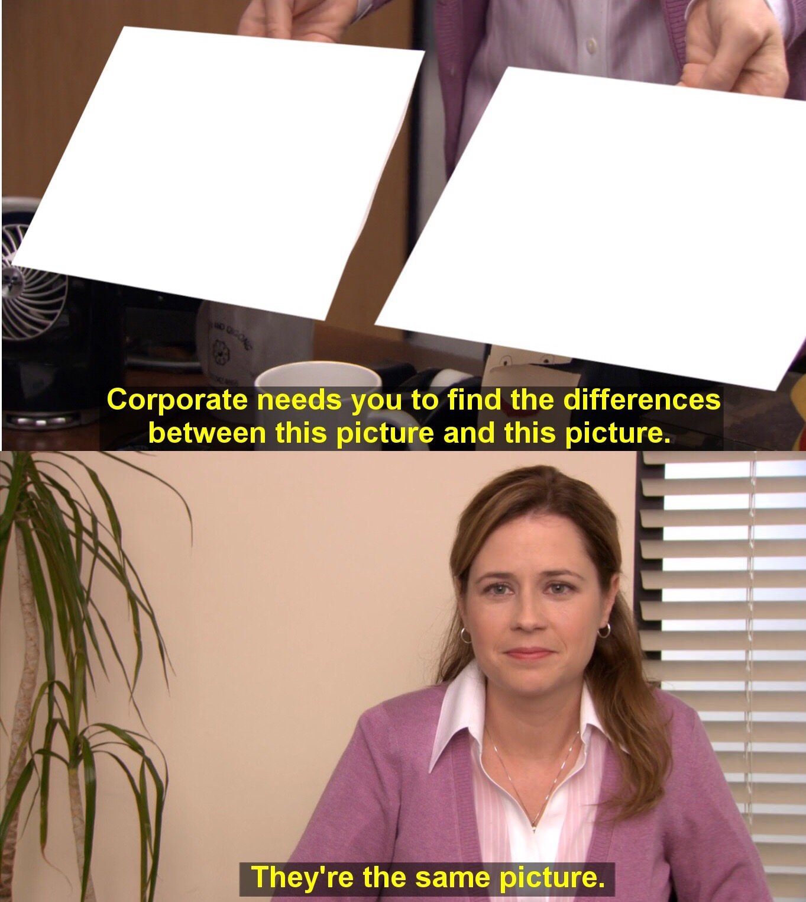

# 🤖 AI Today What can AI do in practice? Lunch Demo — 2026
## 📋 Agenda 1. 🎬 **Premise** — how this demo was built 2. 🎨 **Demo: Doodle Challenge** — local AI in the browser 3. 💻 **Live Coding with Claude** — building a feature on the spot 4. 💭 **Personal Thoughts** — where AI shines and where it struggles 5. ❓ Q&A
## 🎬 Premise This entire demo application was built with: - 🤖 **Claude Code CLI** as the only development tool - ✍️ **Not a single manual edit** — all code written by AI - ⏱️ Done in **around half a day**
### 📜 How it came together 1. 📝 Started with a **plan and spec** in the README 2. 🏗️ Built the **Doodle Challenge** — Express + Socket.io + CNN model 3. 🔄 Switched from TensorFlow.js to **PyTorch + ONNX** (Python 3.14 compatibility) 4. 🎨 Added **Free Drawing** mode with live predictions 5. 🧪 Built **AI Draw** — simulated annealing adversarial examples 6. 🧠 Added **custom category training** with KNN feature extraction 7. 📊 Created **presentation slides** with reveal.js + InfTec branding 8. 🎮 Added **Space Invaders** game mode 9. 🔧 Dozens of **fixes and polish** — particles, QR codes, lobby system, persistence *~70 commits, 0 manual edits*
Writing code manually for days
Having AI build it in half a day
## 🎨 Demo: Doodle Challenge Can AI recognize your doodles? 🤔
### How it works - **CNN** (Convolutional Neural Network) — a type of AI that learns to recognize visual patterns by scanning images through layers of filters - Trained on Google's **Quick, Draw!** dataset — 25 categories, 200k samples - ~90% accuracy, 28x28 pixel input, <1 MB model - **ONNX** (Open Neural Network Exchange) — universal model format that runs on any platform - Model runs *in your browser* via ONNX Runtime WebAssembly — no server needed
### ☁️⃠ No cloud needed The model runs **entirely on your device** - 🚫 No API calls, no latency, no data leaving your phone - ⚡ Classification every 300ms as you draw - Server only handles the leaderboard
### 📱 Requirements Works on any **modern smartphone or laptop**: - 🍏 **iOS:** Safari 16+ (iPhone 8 or newer, iOS 16+) - 🤖 **Android:** Chrome 91+ (most phones from ~2018+) - 💻 **Desktop:** Chrome, Firefox, Edge (any recent version) - ❌ **Not supported:** iPhone 7 or older, Internet Explorer All you need is **WiFi** — same network as the presenter
Let's play!
### Free Drawing Mode What does the AI see when you draw? - Live top-5 predictions with confidence scores - Debug preview: the 28x28 pixels the model actually sees
Free Drawing
### 👀 Watch AI Draw: Adversarial Examples - AI optimizes pixels to maximize a target category - Result: 95%+ confidence — but looks like noise to humans 🤯 - This is why adversarial attacks on AI are a real problem *🚗 Self-driving cars, 🛡️ content filters, 🧑 biometric systems...*
AI is 95% confident it's a cat
Humans: "That's just random noise"
### 🧠 Teach it something new Transfer learning with KNN on the feature space - Draw 3–5 samples of a new category - Uses the CNN's 128-dim features + cosine similarity - No retraining needed — works instantly - Shared across all participants via WebSocket
Train Custom Categories
### 💡 Key Takeaways - 📦 AI models can be **tiny** (<1 MB) and run locally - 📊 Training data quality matters more than quantity - 🔄 Transfer learning: reuse features for new tasks - ⚠️ AI confidence ≠ human perception (adversarial examples) - 🛠️ AI is a **tool** — powerful but needs human judgement
## 💻 Live Coding with Claude AI-assisted software development
### Claude Code - CLI tool that understands your entire codebase - Reads files, writes code, runs commands - Iterates: writes → tests → fixes → commits - Not autocomplete — an autonomous coding agent
### 🏗️ What should we build? Pick one (or surprise me 😉): 1. 🎮 Add a new game mode 2. 🧑🎨 Define player avatars 3. 🏆 Winners podium at end of game 4. 🖌️ Shared canvas — everyone draws at the same time 5. ❓ Your idea?
### Live Coding Takeaways - AI accelerates development, doesn't replace understanding - Best for: scaffolding, boilerplate, iteration, exploration - You still need to review, guide, and decide
## 💭 Personal Thoughts My take on AI — now and in the near future
### 💪 What it does best 1. 🚀 **Rapid Prototyping** — any technology, from idea to working code 2. 🔍 **Code Analysis** — architecture review, code explanation, refactoring suggestions 3. 🌍 **Less familiar technology** — scripts, system configuration, cloud deployment, ...
### ✅ When it works best 1. 🎯 We can define **isolated functionality** with clear output expectations 2. 🧪 Have **tests or builds** the AI can run autonomously 3. 📐 Is given **clear guidelines** to follow
### 😬 When it struggles 1. 🧩 **Complex codebases** without clear boundaries 2. 🖥️ **Complex UIs** that are hard to test
AI confidently generating code
In a codebase it doesn't understand
### ⚠️ Using AI functionality in the app Training might be challenging. Without the right training, results might be of **little value** or even **wrong**. 🙈
One does not simply
Train an AI model without good data
### 🔮 How it will impact Software Developers 1. 📉 **Technical knowledge** (languages, frameworks) becomes less important 2. 📈 **Higher-level thinking** gets more important — architecture, UX, patterns 3. 🤝 **Soft skills** matter more — understanding customer needs 4. 👥 Teams will likely get **smaller**, nearshoring may become less attractive 5. 🔎 **Non-technical roles** will extract info from the codebase directly
### 🤖 How AI thinks it will impact Software Developers *This slide was written by Claude, not the presenter* 1. 🧑💻 Developers become **orchestrators** — defining *what* to build, not *how* 2. 💡 The bottleneck shifts from **writing code** to **asking the right questions** 3. 🌐 **Full-stack becomes the norm** — AI lowers the cost of learning new domains 4. 🔍 **Code review becomes critical** — trusting but verifying AI output is a new core skill 5. ⚡ **Speed of iteration** changes expectations — prototypes in hours, not weeks 6. 🧰 Developers who **embrace AI** will outcompete those who don't — not because AI replaces them, but because it **amplifies** them

"Senior developer" vs "Junior dev with AI"
## ❓ Questions? - 💬 What are **your experiences** with AI? - 🔮 How do you think AI will **impact our jobs**?